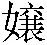

日中八十度内外は誠に浦山しい事、上海では又九十度以上、小生儀汗物を光榮なる反抗の看板として奮闘して居ます。
『十竹齋箋譜』は凡そ五十余枚出瘄ました。中の四枚の見本を御目にかけます。全部二百八十枚程あるから何時完工するか解らず半分出上れば前期予約として発売するつもりです。こ ではいのちは頗るあぶない。私人の犬にならなければ自分の趣味をもつ人も、割合に一般の文化に関心するものも、右も左も反動として、いぢめます。一週前に同じ趣味をもつ北平に于ける友人二人つかまへられました。暫く立ったら古い纴本を翻刻する人もなくなるだろー。併し僕が生きて居れば何頁でも何時までもやって行きます。
ではいのちは頗るあぶない。私人の犬にならなければ自分の趣味をもつ人も、割合に一般の文化に関心するものも、右も左も反動として、いぢめます。一週前に同じ趣味をもつ北平に于ける友人二人つかまへられました。暫く立ったら古い纴本を翻刻する人もなくなるだろー。併し僕が生きて居れば何頁でも何時までもやって行きます。
私も家内も達者です。アメバと海嬰とはもうサヨナラの様だが、そのかはり、海嬰奴は大に朘戢、つい二三日前に「こんなパパは、何んのパパだ！」と云ふ様な頗る反動的な宣言までも発表しました。困った事です。
迅 頓首
增田兄几下
御鳑親様、奥様、御

様及び坊ちゃんにもよろしく[译文]
尊处白天在八十度内外，诚可羡。上海又是九十度以上，鄙人正以满身痱子，作为光荣的反抗的招牌而奋斗着。
《十竹斋笺谱》已完成约五十余幅，现将其中四幅样张奉览。全部约二百八十幅，何时可成，尚不可知，俟半数完成后拟即开始预约，先予发卖。现在这里，生命是颇危险的，凡是不愿当私人的走狗，有自己兴趣的人，较为关心一般文化的人，不论左右都看作反动，而受迫害。一星期前，北平有两个和我兴趣相同的朋友被捕[156]了。怕不久连翻刻旧画本的人都没有了，然而只要我还活着，不管刻多少页，做多久，总要做下去。
我与内子均好，阿米巴似已和海婴告别，但海婴这家伙却非常捣蛋，两三日前竟发表了颇为反动的宣言，说：“这种爸爸，什么爸爸！”真难办。
迅 顿首〔八月七日〕
增田兄几下
令尊令堂、令夫人、令嫒和宝宝均吉
注 释
[156] 指台静农和李霁野。他们被捕事，参看340805信注〔1〕。